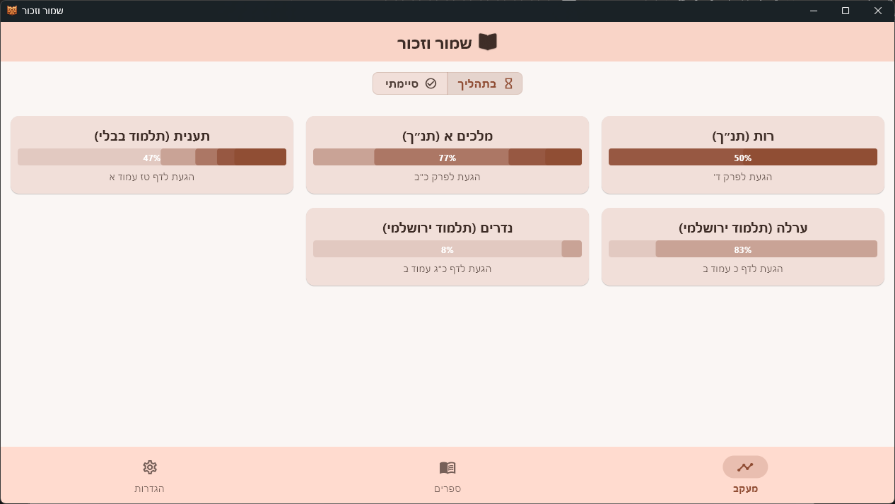

הכאב המוכר של לימוד שנשכח
סיימתם סדר מלא בגעשמאק, אבל מרגישים איך הלימוד מתחיל לברוח מהזיכרון? התחלתם מסכת בהתלהבות, אבל איבדתם את סדר החזרות בדרך?
התחושות האלה מוכרות לכל לומד תורה. בדיוק בשביל זה פותח שמור וזכור – כלי עזר שנועד לבנות את הלימוד שלכם כבניין מסודר, נדבך על גבי נדבך, כדי שכל שעה של עמל תהפוך לתורה ששגורה בפיכם.
כך תבנו את הלימוד, שלב אחר שלב
קבעו את היעד: במסך ה"ספרים", בחרו את המסכת או הספר שאתם רוצים להתחיל (או לעדכן).
בנו את הלימוד: סמנו כל דף שלמדתם וכל חזרה שעשיתם. ראו בעיניים איך הבניין נבנה.
ראו את הברכה: במסך ה"מעקב", צפו בסיפוק בהתקדמות הכללית, וקבלו חשק להמשיך עד הסיום המיוחל.
כל מה שצריך כדי להתמיד ולזכור
כדי שהתורה תהיה שגורה בפיך
סמנו עד שלוש חזרות ודעו תמיד מה צריך חיזוק, בדיוק לפי שיטת החזרות שלכם.
לראות את ההספק בעיניים
סרגל התקדמות חזותי נותן סיפוק מיידי וחשק להתמיד עד הסיום.
כל התורה במקום אחד
מש"ס ובבלי וירושלמי ועד רמב"ם ותנ"ך. סוף סוף סדר בכל החזיתות.
כי העמל שלכם יקר
המידע נשמר על המכשיר שלכם בלבד, ותמיד תוכלו לגבות אותו לקובץ כדי שלעולם לא ילך לאיבוד.
מבט אחד שווה אלף מילים

פותח מתוך אהבת תורה, למען לומדי התורה
שמור וזכור לא נולד בחברת הייטק, אלא מתוך צורך אמיתי שצמח בבית המדרש. בתור לומד, התמודדתי בעצמי עם האתגר של מעקב מסודר אחרי ההספק והחזרות. חיפשתי כלי פשוט, נקי מהסחות דעת, שיעזור לי לבנות את הלימוד בבטחה - ולא מצאתי.
מה שהתחיל כפתרון אישי קטן, הפך לכלי שיכול לסייע ללומדים רבים. לכן, התוכנה מוצעת בחינם לגמרי, לזיכוי הרבים. אין מאחוריה מודל עסקי או כוונת רווח, אלא רק רצון טהור לתת יד ועזר לכל מי שחפץ שעמלו בתורה לא ילך לאיבוד.
הורדה והתקנה
הורידו את הגרסה המתאימה למכשירכם והתחילו עוד היום.
חשוב: התוכנה פועלת באופן מקומי לחלוטין. המידע נשמר על המכשיר בלבד ואינו נשלח לשום מקום. בטוח ופרטי.